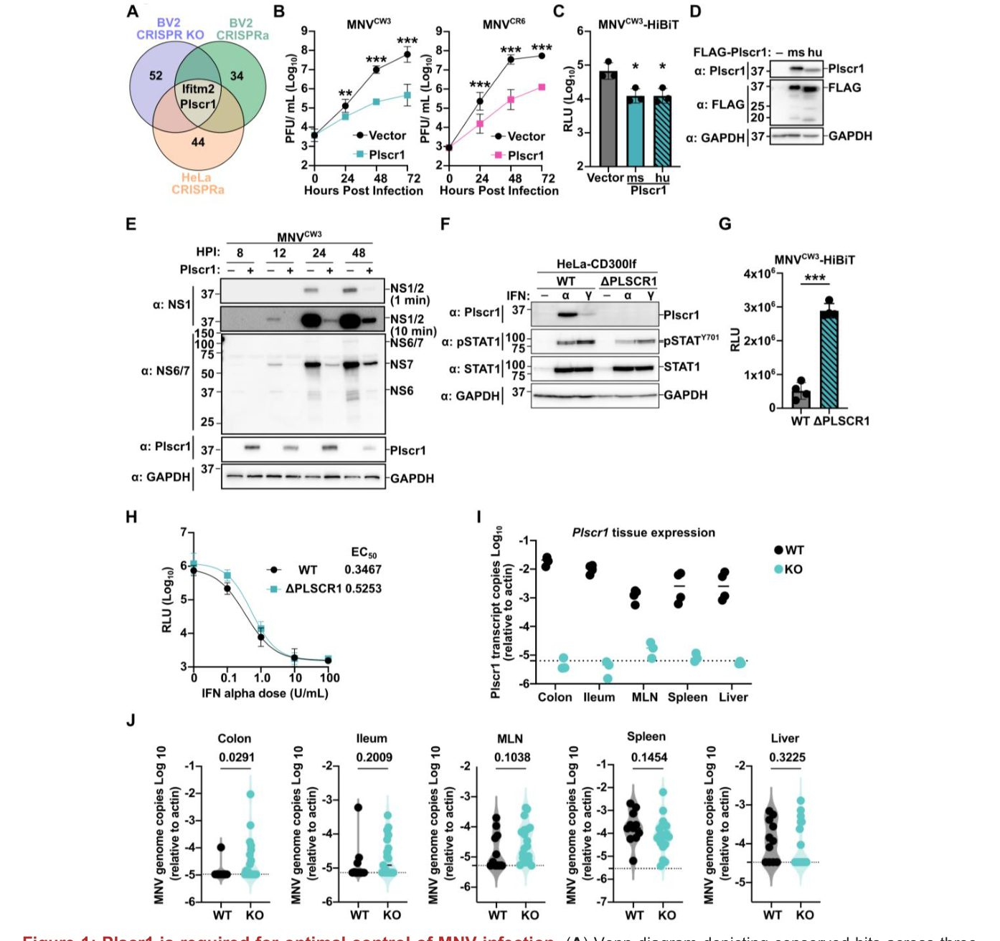
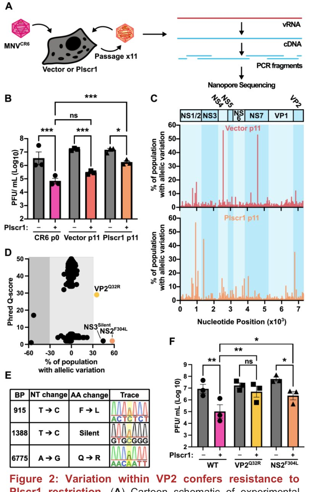
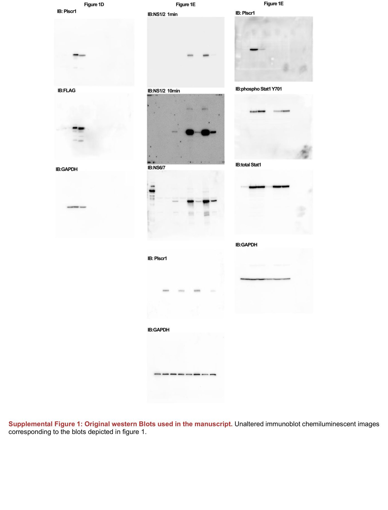
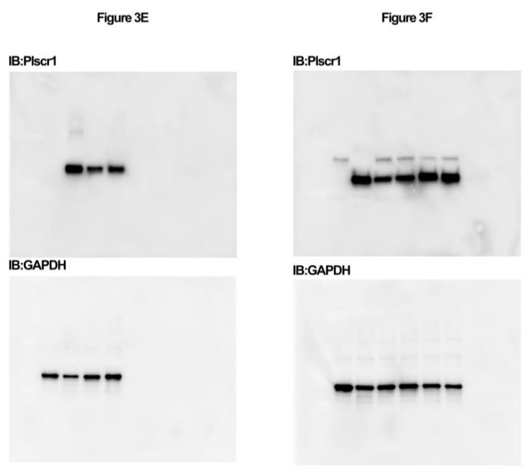

Белок Plscr1 останавливает проникновение мышиного норовируса
{kind=link}

Норовирусы вызывают тяжелые гастроэнтериты, но защитные механизмы организма изучены плохо. Ученые выяснили, что ген Plscr1, стимулируемый интерфероном, эффективно ограничивает размножение мышиного норовируса. Оказалось, что Plscr1 блокирует проникновение вируса в клетки на этапе после прикрепления. Устойчивость к этому белку обеспечивает всего одна замена в вирусном белке VP2. Это открытие показывает, что белок борется не только с оболочечными, но и с без оболочечными вирусами.
Подробный разбор статьи
Резюме
Норовирусы представляют собой одну из главных причин развития острого гастроэнтерита во всем мире, однако защитные факторы хозяина, способные подавлять репликацию этих патогенов, до сих пор остаются малоизученными. В ходе систематического анализа результатов полногеномных скринингов с использованием систем CRISPR-активации и CRISPR-нокаута исследователи обнаружили, что интерферон-стимулируемый ген Plscr1 (кодирующий фосфолипидную скрамблазу 1) выступает в качестве ключевого фактора ограничения для мышиного норовируса (MNV). Ранее было известно, что белок Plscr1 препятствует слиянию оболочечных вирусов с мембранами эндосом, поэтому обнаружение его противовирусной активности в отношении MNV — вируса, не имеющего суперкапсида (оболочки) — оказалось весьма неожиданным открытием. В представленной работе авторы экспериментально доказывают, что присутствие Plscr1 является как необходимым, так и достаточным условием для подавления инфекции MNV в условиях in vitro. Кроме того, этот белок вносит существенный вклад в контроль инфекционного процесса в толстой кишке лабораторных мышей in vivo. С точки зрения молекулярного механизма было установлено, что Plscr1 блокирует проникновение норовируса в клетку-хозяина на этапе, следующем сразу за прикреплением вириона к клеточной поверхности (пост-адгезионная стадия).
Важно
Белок Plscr1, традиционно считавшийся защитником от оболочечных вирусов, эффективно подавляет размножение безоболочечного мышиного норовируса (MNV) in vitro и in vivo, блокируя его проникновение в клетку на этапе после прикрепления.
Пояснение
CRISPR-скрининг — это метод высокопроизводительного поиска генов, при котором с помощью системы CRISPR/Cas9 поочередно выключают (нокаут) или активируют (активация) тысячи генов в клетках, чтобы выяснить, какие из них влияют на исследуемый процесс (например, на выживаемость клеток при вирусной инфекции).
Генетический анализ показал, что всего одна аминокислотная замена в малом капсидном белке VP2 делает норовирус устойчивым к действию Plscr1. Поскольку у калицивирусов белок VP2 отвечает за доставку вирусной РНК внутрь цитоплазмы путем формирования пор (прокалывания) в эндоцитозных мембранах, полученные данные указывают на то, что мишенью для Plscr1 служит именно этот поздний этап проникновения вируса. Таким образом, результаты исследования расширяют спектр противовирусного действия PLSCR1 на безоболочечные вирусы и выявляют неожиданную точку пересечения в путях проникновения вирусов с оболочкой и без нее.
Осторожно
Хотя исследование выполнено на модели мышиного норовируса (MNV), механизмы проникновения калицивирусов высококонсервативны, однако для подтверждения аналогичной роли человеческого PLSCR1 в отношении норовирусов человека требуются дополнительные клинические и клеточные исследования.
Результаты
PLSCR1 достаточен для ограничения репликации MNV
Для систематического поиска кандидатных противовирусных генов авторы проанализировали данные трех ранее проведенных полногеномных скринингов методом CRISPR. Все скрининги представляли собой пулированные анализы с использованием клеточной выживаемости после инфекции вирусом мышиного норовируса (MNV) в качестве селективного давления, но различались по типам клеток и стратегиям пертурбации. Первый скрининг представлял собой нокаутную библиотеку CRISPR высокой плотности в клетках BV2 (мышиной линии микроглии, естественным образом восприимчивой к MNV), где отрицательная селекция выявляла гены, нокаут которых повышал чувствительность к инфекции. Второй скрининг использовал подход активации CRISPR (CRISPRa) в клетках BV2, при котором сверхэкспрессия предполагаемых противовирусных генов давала клеткам преимущество в росте при заражении MNV. Третий скрининг также представлял собой CRISPRa-скрининг, но был выполнен в клетках HeLa, экспрессирующих рецептор MNV — CD300lf. Анализ этих трех независимых подходов стабильно выявил два гена с противовирусной активностью против MNV: IFITM2 и PLSCR1 (Рис. 1А). Оба гена относятся к интерферон-стимулированным генам (ISG), чья роль связана с подавлением проникновения оболочечных вирусов. IFITM2 входит в семейство трансмембранных белков IFITM, блокирующих проникхождение вируса из эндомембранных компартментов, хотя IFITM3 также ингибирует безоболочечный реовирус. Фосфолипидскрамблаза 1 (PLSCR1) индуцируется всеми тремя типами интерферонов (IFN) и блокирует слияние ВИЧ и SARS-CoV-2 с эндоцитарными мембранами, а другие оболочечные вирусы ингибирует через иные механизмы; однако до сих пор способность PLSCR1 подавлять безоболочечные вирусы не была показана. Поэтому авторы сосредоточились на изучении того, как PLSCR1 ограничивает репликацию MNV.
Пояснение
> CRISPR-скрининги (нокаут и активация) — это высокопроизводительные генетические методы массового отключения или усиления работы генов в масштабах всего генома для поиска факторов, влияющих на выживаемость клеток при вирусной инфекции.
Чтобы проверить, достаточна ли сверхэкспрессия PLSCR1 для ингибирования MNV, авторы использовали клетки HeLa-CD300lf, отличающиеся генетической пластичностью. Хотя два штамма MNV (MNVCW3 и MNVCR6) активно реплицировали в контрольных клетках с пустым вектором, экспрессия мышиного Plscr1 значительно снижала вирусный рост (Рис. 1B). Несмотря на то, что мышиный и человеческий белки PLSCR1 имеют лишь 75% идентичности последовательностей, сверхэкспрессия любого из них подавляла репликацию MNV в клетках HeLa-CD300lf, что измерялось с помощью репортерной системы на основе расщепляемой люциферазы (MNV-HiBiT) (Рис. 1C и 1D). Согласуясь со снижением вирусной продукции, клетки, экспрессирующие Plscr1, демонстрировали минимальные уровни синтеза вирусного белка после заражения MNV по сравнению с контролем (Рис. 1E). В совокупности эти данные показывают, что PLSCR1 достаточен для ингибирования репликации MNV.
Plscr1 необходим для ограничения MNV in vitro
Для определения того, необходим ли PLSCR1 для оптимального ограничения MNV, исследователи получили клетки HeLa с нокаутом PLSCR1, экспрессирующие CD300lf (HeLaΔPLSCR1-CD300lf). Отсутствие PLSCR1 было подтверждено вестерн-блоттингом лизатов клеток HeLa-CD300lf и HeLaΔPLSCR1-CD300lf после стимуляции IFN-α или IFN-γ (Рис. 1F). В полном соответствии с данными скрининга, при заражении MNV-HiBiT в клетках HeLaΔPLSCR1-CD300lf наблюдалось увеличение репликации вируса по сравнению с исходными клетками HeLa-CD300lf (Рис. 1G). Поскольку ранее предполагалось, что PLSCR1 может либо усиливать ответ интерферона I типа, либо действовать как прямой противовирусный агент, авторы проверили чувствительность MNV к IFN-α при наличии или отсутствии эндогенного PLSCR1. Обработка IFN-α значительно снижала репликацию MNV дозозависимым образом независимо от экспрессии PLSCR1 (Рис. 1H). Значимых различий в значениях полумаксимальной эффективной концентрации (EC₅₀) между этими линиями клеток обнаружено не было, что указывает на то, что дефицит PLSCR1 не нарушает интерфероновый ответ I типа, направленный на ограничение MNV (Рис. 1H). Таким образом, результаты подтверждают, что PLSCR1 функционирует как прямой противовирусный компонент, необходимый для оптимального контроля MNV.
Важно
> Нокаут PLSCR1 приводит к росту репликации MNV, но не изменяет чувствительность к интерферону I типа (EC₅₀ не отличается), что доказывает прямую противовирусную роль PLSCR1.
У мышей с дефицитом Plscr1 наблюдается умеренное увеличение репликации MNV в толстом кишечнике
Интерфероновая сигнализация определяет динамику инфекции MNV in vivo, однако конкретные эффекторы в виде ISG-белков изучены недостаточно. Авторы использовали мышей с нокаутом гена Plscr1 (Plscr1⁻/-), описанных ранее, и оценили уровень транскриптов Plscr1 в тканях, значимых для инфекции MNV. Транскрипты Plscr1 детектировались во всех исследованных тканях диких мышей — с максимальной экспрессией в толстой и подвздошной кишках, тогда как у нокаутных мышей транскрипты отсутствовали (Рис. 1I). Мышей с достаточным уровнем Plscr1 и дефицитных по нему перорально заражали штаммом MNVCW3, после чего собирали ткани на 3-й день после инфекции (Рис. 1J). Согласуясь с предыдущими отчетами, геномы MNVCW3 были обнаружены в селезенке, печени и мезентериальных лимфатических узлах (MLN) мышей дикого типа.
Методы
Клеточные линии и культивирование
Для экспериментов использовались линии клеток 293T, HeLa и BV2, которые культивировались в среде Dulbecco’s Modified Eagle Medium с добавлением 5% фетальной сыворотки крови крупного рогатого скота. Стабильные клеточные линии с повышенной экспрессией получали с помощью лентивирусной трансдукции. Для этого лентивирусные плазмиды ко-трансфицировали вместе с упаковывающим вектором psPax2 и псевдотипирующим вектором pCMV-VSV-G в клетки 293T с использованием реагента PEI от Polysciences. Спустя 48 часов после трансдукции лентивирус собирали, фильтровали через фильтр с размером пор 0.45 мкм и добавляли к клеткам. Еще через 48 часов среду заменяли на селективную, содержащую 350 мкг/мл гигромицина, 5 мкг/мл бластицидина и/или 1 мкг/мл пуромицина. Регулярная проверка всех линий подтвердила отсутствие контаминации микоплазмой.
Пояснение
Лентивирусная трансдукция и селекция антибиотиками позволяют внедрить нужный генетический материал в геном клеток и оторочить стабильные популяции, выживающие под воздействием токсичных агентов.
Для получения нокаутных клеток HeLaΔPlscr1 родительские клетки HeLa ко-трансфицировали плазмидами pSpCas9(BB)-2A-Blast и pSpCas9(BB)-2A-Puro, содержащими специфичные направляющие РНК для гена PLSCR1 с последовательностями puro: 5’ GGGTCAAGAAGTCATAACTC 3’ и blast: 5’ TCAGGAGGTCTGTGATCAAT 3’. Через 48 часов после трансфекции в течение двух дней проводили селекцию с 5 мкг/мл бластицидина и 1 мкг/мл пуромицина, после чего клетки отмывали и переводили в среду без антибиотиков. Одиночные клеточные клоны выделяли методом предельного разведения с последующим выделением геномной ДНК с использованием набора Zymo D3025. ДНК амплифицировали с праймерами (прямый: 5’ ggggtatcatcaaaaactgg 3’; обратный: 5’ gcacacaacacatggaccac 3’). Наличие инсерций и делеций (инделов) скринировали с помощью Сэнгер-секвенирования отдельных ПЦР-реакций, клонированных в pCR-Blunt II-Topo с применением набора Zero Blunt Topo Kit. Полученный клон HeLaΔPlscr1 содержит специфические аллели с инделовскими мутациями и стоп-кодонами.
Вирусные анализы
Штаммы MNVCW3, MNVCR6 и их мутантные варианты получали путем трансфекции молекулярных клонов в клетки 293T с последующей амплификацией на клетках BV2. Для заражения вирусом клетки HeLa-CD300lf высевали в 96-луночные планшеты и на следующий день инокулировали 25 мкл штаммов MNV при множественности заражения MOI 0.05. Планшеты инкубировали на качалке в течение 1 часа при комнатной температуре, после чего добавляли еще 75 мкл среды. Образцы инкубировали при 37 °C в атмосфере 5% extCO₂ и замораживали при −80 °C в заданные временные точки. Вирусные титры определяли методом бляшкообразования. Анализы MNV-HiBiT проводили, высевая 10⁴ клеток H1 HeLa-CD300lf в 96-луночные планшеты и инокулируя их 25 мкл штаммов MNV при MOI 0.5 или 5. После инкубации на качалке в течение 1 часа при комнатной температуре и добавления 75 мкл среды образцы инкубировали при 37 °C и 5% extCO₂ с последующим замораживанием при −80 °C. Люминесцентную активность после оттаивания измеряли на мультимодельном ридере Synergy LX с использованием системы Nano-Glo HiBiT Lytic Detection System.
Плазмидные конструкции
КДНК мышиного и человеческого белков Plscr1 вместе с соответствующими мутациями были клонированы в лентивирусный вектор pCDH-EF1-MCS-IRES-Puro с N-концевой меткой 3xFLAG. Молекулярные клоны для MNVCW3 (GenBank EF014462.1) и MNVCR6 (GenBank JQ237823) описывались ранее. Перед использованием все плазмидные последовательности были проверены методом полноплазмидного секвенирования.
Иммуноблоттинг
Образцы, лизированные в буфере Лэммли, разделяли с помощью SDS-ПААГ и переносили на PVDF-мембраны. Мембраны блокировали раствором TBS-T с добавлением 5% сухого обезжиренного молока перед инкубацией с первичными антителами. В работе использовались мышиные антитела α-Plscr1 (1:1,000; Sigma MABS482), α-GAPDH-HRP (1:10,000; Sigma G9295), α-FLAG M2-HRP (1:2,500; Sigma A8592), а также кроличьи антитела α-STAT1 phospho Y701 (1:1,000; Cell Signaling 9167S), α-STAT1 (1:1,000; Cell Signaling 9172S), вторичные антитела α-rabbit-HRP (1:10,000; Thermo Fisher 34102) и α-mouse-HRP (1:10,000; Cell Signaling 7076S). Антитела против неструктурных белков MNV (мышиные α-NS1 и кроличьи α-NS6/7) также применялись стандартным образом. Ниже приведена последовательность клонов: дикий тип N M G Q E V I T L E R P L R C S (182 ААТ АТГ ГГТ КАА ГАА ГТК АТА АКТ КТГ ГАГ АГА ККА КТА АГА ТГТ АГК), а также варианты с делециями на 17 пар оснований (17 base pair deletion), 25 пар оснований (25 base pair deletion) и 5 пар оснований (5 base pair deletion).
{kind=link}

{kind=link}

{kind=link}

Схема исследования
Препринт не прошёл рецензирование. Выводы предварительные.
Источник
| Категория | Лицензия препринта |
|---|---|
| microbiology | — |
Источники
| Источник | Ссылка |
|---|---|
| DOI | doi.org |